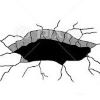
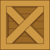
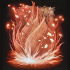

这是我自己写的一个网站。因为学的东西不多而且做的比较匆忙所以可能bug会比较多。目前只有一个吃豆人的小游戏，未来可能会加入更多的东西，比如博客，在线五子棋之类的。吃豆人小游戏是在线的且支持两个人进行联机。游戏规则可以查看下面的游戏规则说明。点击网站底部的进入游戏界面按钮就可以跳转到游戏界面了。
游戏的获胜条件是要获得尽可能多的分数。玩家可以通过WASD键进行移动，通过M键互动。玩家分数会随着游戏时间不断减少，一旦减少为-100则游戏结束。游戏场地是一个矩形，其中有各种物体，它们都会对玩家的移动或分数造成影响。以下为物品介绍：
红色是玩家本人，蓝色是敌方玩家。如果如果主动装上敌方玩家则会扣分数。
蓝色正方形表示墙壁：玩家不允许移动到墙壁，如果玩家主动撞上墙壁，则会减少一定的分数。
黄色五角星表示奖励，玩家移动到五角星所在的位置会自动拾取并加分。
这个表示鬼魂。鬼魂会在游戏期间不断地追逐玩家。一旦鬼魂碰到玩家则会按帧降低玩家分数。红色边框地鬼魂会追逐玩家本人。蓝色边框的鬼魂会会追逐敌方玩家。虽然蓝色边框的鬼魂不会主动追击玩家，但若玩家撞上也会有一定的扣分。
这个表示陷阱，一旦玩家触碰到陷阱就会按帧扣分。
这个表示箱子，玩家如果移动到箱子处并按下互动键。则会打开箱子。打开后箱子会消失，并有几率出现两种特殊物品。
以下是两种特殊物品。注意：这些特殊物品仅可以供自己使用，对方是无法使用或看见的。
暗影。暗影会在箱子的周围出现。玩家移动到暗影处时可以按帧得分。如果按下互动键，暗影则会消失，并基于玩家一定的分数。
猩红。猩红会在箱子附近出现。猩红会随着时间流逝不断传染周围的地块或奖励，让周围的地块或奖励也变成猩红。如果玩家移动到猩红地块上，猩红地块就会消失，同时会给予玩家一定的分数。
